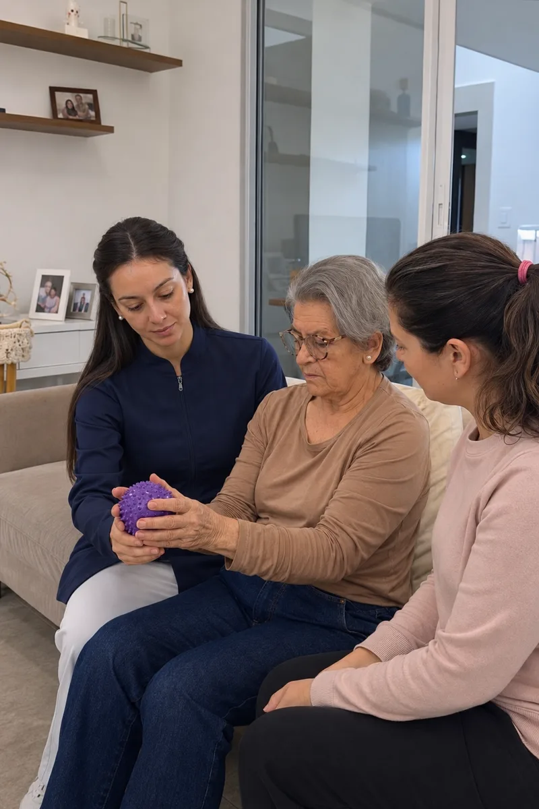
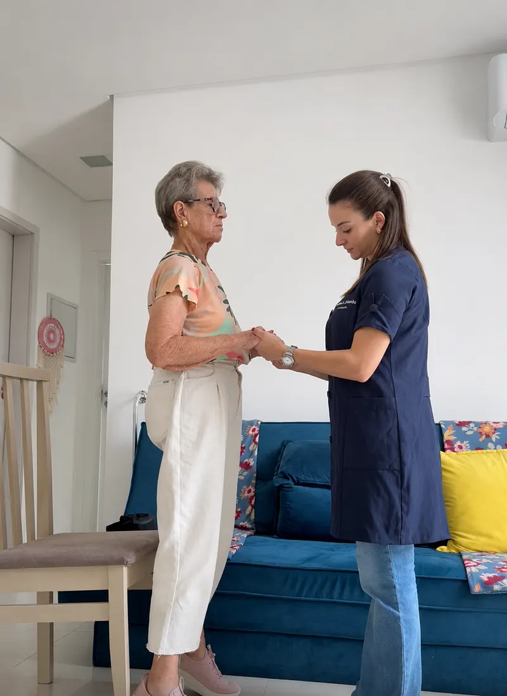
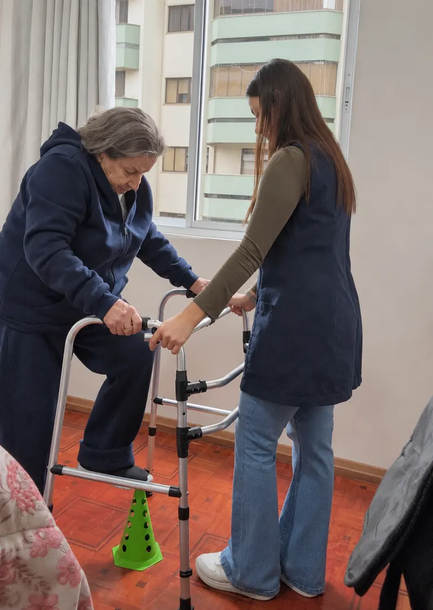
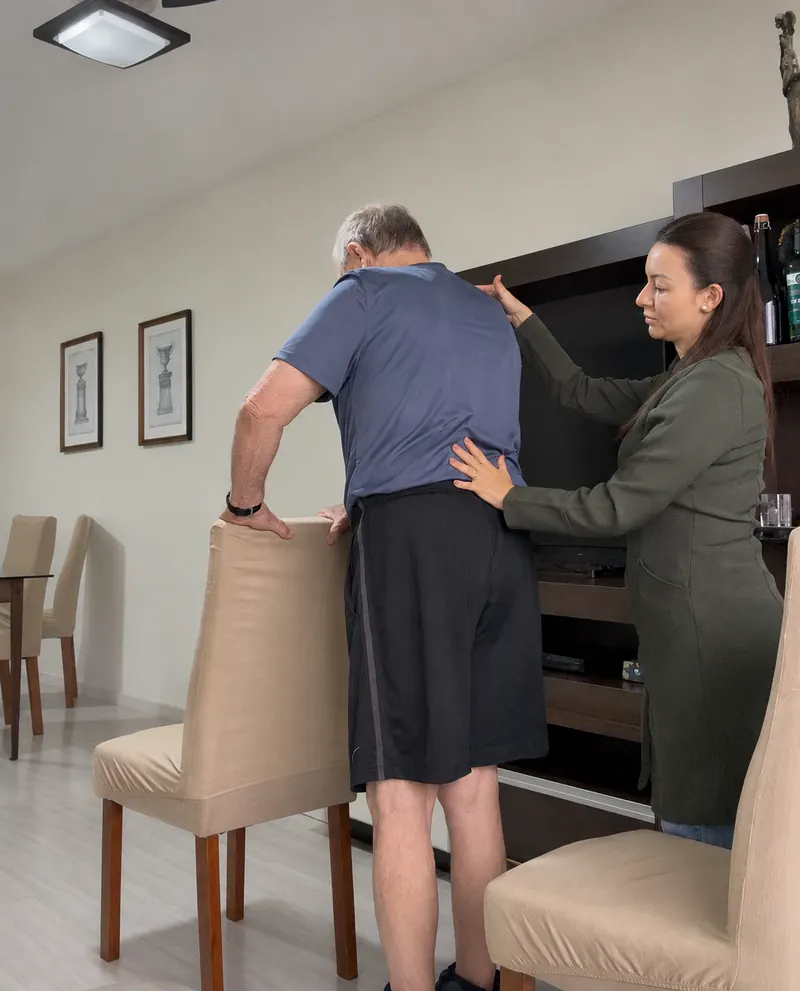
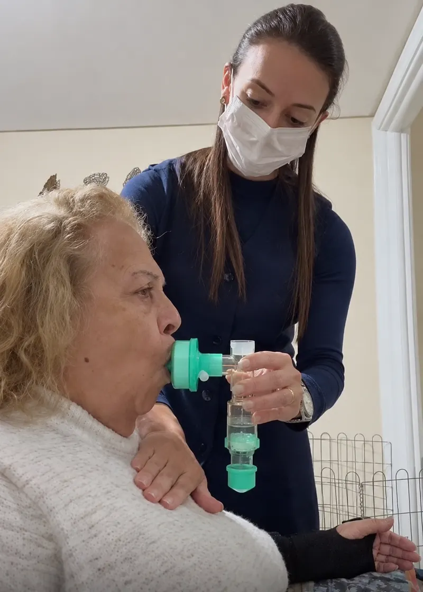
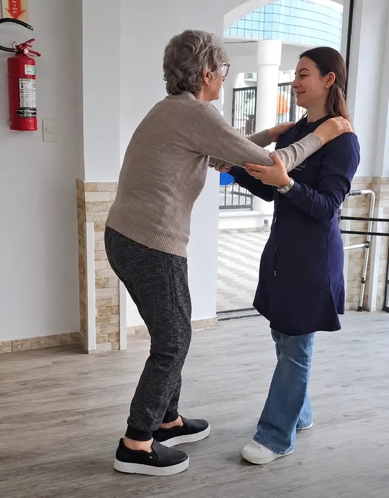
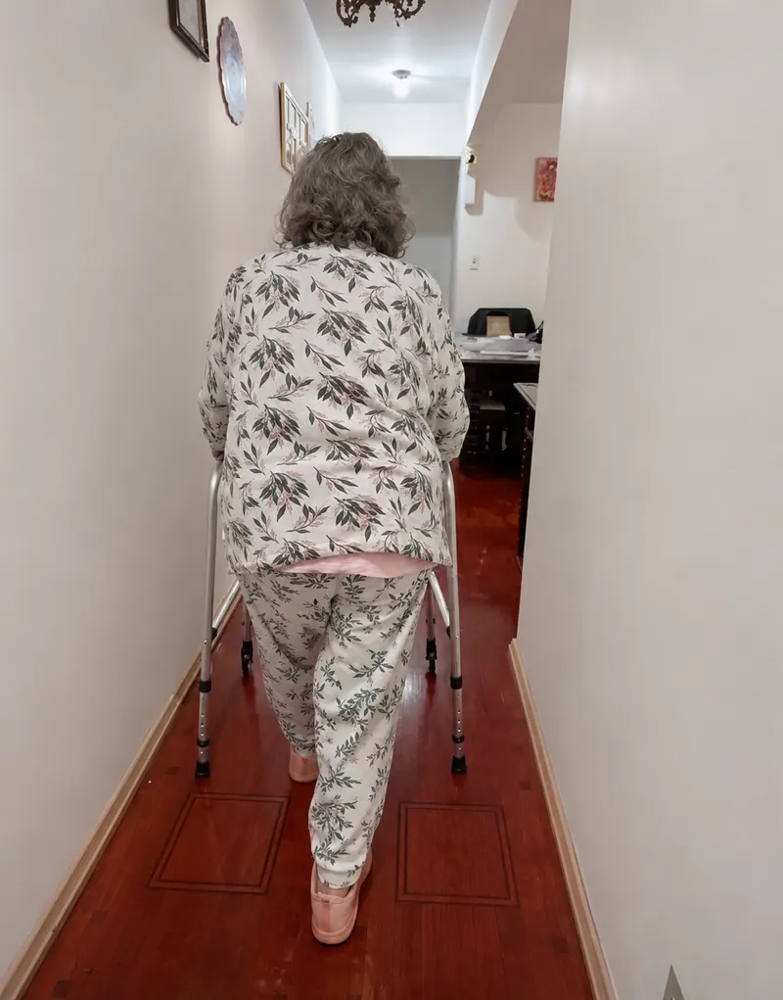

Fisioterapia domiciliar para pessoas idosas
Envelhecer com autonomia é possível
Avaliação específica, plano individualizado e acompanhamento próximo da família, respeitando o ritmo e as possibilidades de cada pessoa.
Balneário Camboriú · Camboriú · Itajaí
Quando procurar
Sinais de que a fisioterapia pode ajudar
Muitas famílias percebem pequenas mudanças antes de qualquer diagnóstico: mais insegurança para andar, dificuldade para levantar da cadeira, cansaço e fraqueza. Uma avaliação ajuda a entender o que está acontecendo e o que é possível fazer.
- 01
Depois de uma internação
Perda de força e de independência após dias de cama ou de pouca atividade.
Conversar sobre isso - 02
Medo de cair ou desequilíbrio
Quedas recentes, tropeços frequentes ou receio de sair de casa.
Conversar sobre isso - 03
Dificuldade para levantar ou caminhar
Esforço para sair da cama, da cadeira ou do vaso sanitário; passos mais curtos e inseguros.
Conversar sobre isso - 04
Dores nas pernas, braços ou coluna
Dores, limitações de movimento e condições musculoesqueléticas que limitam a rotina e as atividades que a pessoa gosta de fazer.
Conversar sobre isso - 05
Fratura de fêmur, prótese de quadril e prótese de joelho
Reabilitação após a fratura e no pós-operatório das próteses de quadril e de joelho.
Conversar sobre isso - 06
AVC, Parkinson, Alzheimer e demências
Cuidado adaptado às condições motoras e cognitivas, com participação da família.
Conversar sobre isso - 07
Cansaço e falta de ar
Reabilitação pulmonar e acompanhamento das necessidades respiratórias.
Conversar sobre isso - 08
Prevenção e manutenção
Preservar capacidades e apoiar a pessoa idosa a se manter ativa dentro de suas possibilidades.
Conversar sobre isso
O plano fisioterapêutico é definido após a avaliação. Frequência, objetivos e recursos variam conforme o quadro, a resposta ao tratamento e as prioridades de cada paciente.
Como funciona
Avaliar, acompanhar e ajustar
O atendimento acontece na casa da pessoa idosa, onde a rotina realmente acontece. Cada etapa é pensada de acordo com a necessidade do idoso, respeitando seu ritmo.
Chame no WhatsApp e conte a situação do seu familiarEscuta e avaliação
Conhecer a história, as dificuldades, a rotina e os objetivos da pessoa idosa e da família. A avaliação é específica para o envelhecimento.
Plano individualizado
Definição de objetivos claros e funcionais (levantar, caminhar, tomar banho com segurança) e das condutas adequadas a cada condição.
Chame no WhatsApp e conte a situação do seu familiar
Tire dúvidas sobre o atendimento
Agende a avaliação
Avaliação em casa, com o plano de tratamento
Diferenciais
O que a família pode esperar

- Avaliação específica para idosos — considera a história, a rotina, as dificuldades e o ambiente da casa.
- Objetivos claros — definidos de acordo com a necessidade da pessoa idosa e o que é importante para ela.
- Monitoramento de sinais vitais — acompanhamento atento durante as sessões em casa.
- Acompanhamento da evolução — observação da resposta ao tratamento e reavaliações periódicas para ajustar o plano.
- Comunicação contínua com familiares — orientação aos familiares e cuidadores: a família sabe o que está sendo feito e como pode ajudar no dia a dia.
- Diálogo com médicos e outros profissionais — quando necessário.
Quem somos
Cuidado individualizado que chega à casa
A EvoluVita é uma empresa de fisioterapia especializada no envelhecimento, fundada pela fisioterapeuta Mariana Alves Campão. Nossa equipe oferece atendimento domiciliar individualizado à pessoa idosa, com foco em preservar sua independência e promover qualidade de vida, respeitando suas condições e necessidades.
Fundadora e responsável técnica da EvoluVita, Mariana é formada em Fisioterapia pela Universidade de Caxias do Sul desde janeiro de 2013, com pós-graduação em Fisioterapia Hospitalar, UTI e Fisioterapia Gerontológica. Sua trajetória inclui experiência em atendimento domiciliar, hospitalar e em instituições de longa permanência para idosos (ILPI).
- Formada em
- 2013
- Pós-graduação
- Fisioterapia gerontológica
- Registro
- CREFITO-10 187677
No dia a dia
Atendimento real, no dia a dia de cada paciente






Depoimentos
O que dizem as famílias
Preciso te dar uma ótima notícia. Meu pai disse que sente-se melhor, notei que está mais disposto, andando melhor. Muito obrigada!
Obrigado por estar dando qualidade de vida à minha amada mãe!
Obrigado, Mariana! Ele elogiou muito os exercícios. Muito obrigado pela tua paciência e profissionalismo!
Obrigada, Mariana, excelente teu acompanhamento. Ele tá adorando, viu? Muito obrigada por tudo.
Relatos enviados por familiares de pacientes. Cada evolução depende da avaliação e da condição de cada pessoa.
Perguntas frequentes
Dúvidas que as famílias costumam ter
Não encontrou o que procurava? Mande uma mensagem; respondemos com calma.
Falar no WhatsAppComo funciona a avaliação?
A avaliação acontece na casa da pessoa idosa. Conversamos sobre a história de saúde, a rotina, as dificuldades e os objetivos do paciente e da família, e avaliamos força, equilíbrio, marcha, mobilidade e sinais vitais. A partir daí, propomos um plano individualizado.
Quem pode se beneficiar?
Pessoas idosas que passaram por internação, que têm medo de cair, dificuldade para levantar ou caminhar, dores, fratura de fêmur, prótese de quadril ou de joelho, AVC, Parkinson, Alzheimer ou outras demências, ou que desejam manter a força e a independência. A avaliação indica se e como a fisioterapia pode ajudar.
Quais cidades vocês atendem?
Balneário Camboriú, Camboriú e Itajaí, em Santa Catarina. A disponibilidade é confirmada conforme o endereço e a demanda.
Com que frequência acontecem as sessões?
A frequência é definida após a avaliação e revista ao longo do acompanhamento. Depende do quadro, dos objetivos e da resposta ao tratamento.
Como conversar sobre valores?
O plano de atendimento é definido na avaliação, de acordo com as necessidades da pessoa idosa e a frequência indicada para as sessões. Chame no WhatsApp: explicamos tudo com transparência antes de começar.
A família participa do atendimento?
Sim. A família recebe orientações sobre como apoiar a pessoa idosa no dia a dia e é informada sobre a evolução, sempre respeitando as escolhas do paciente.
Contato
Vamos conversar sobre cuidado?
Conte sobre as necessidades do seu familiar idoso e o que tem preocupado sua família. Vamos acolher suas dúvidas e orientar o agendamento de uma avaliação domiciliar.
Agende uma avaliação pelo WhatsAppevoluvitafisioterapia@gmail.com@marianacampao
(47) 99252-1039 · Atendimento domiciliar em Balneário Camboriú, Camboriú e Itajaí · SC